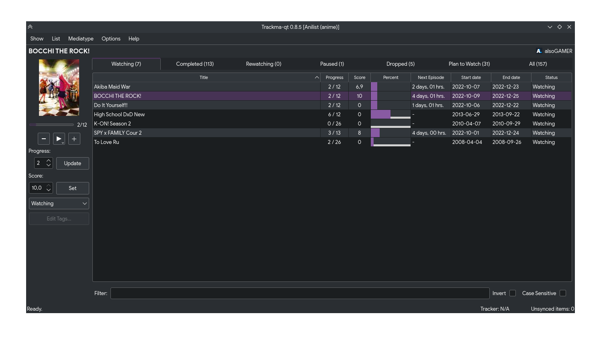
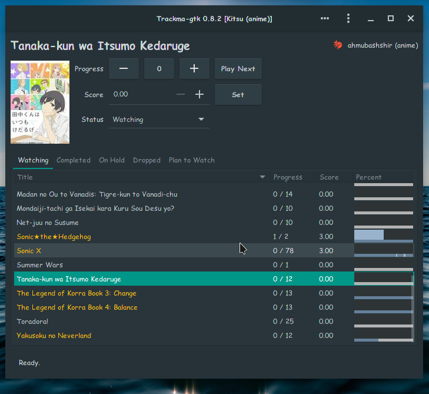
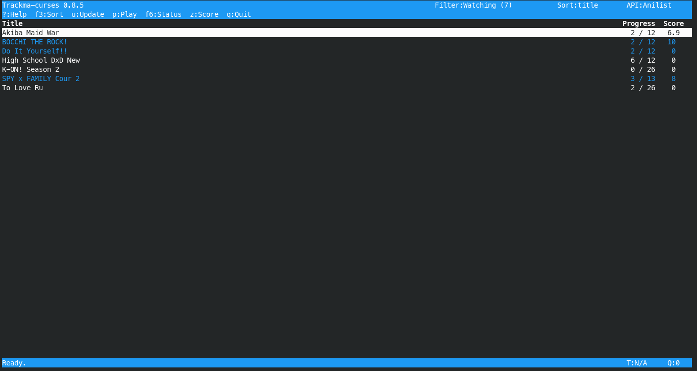
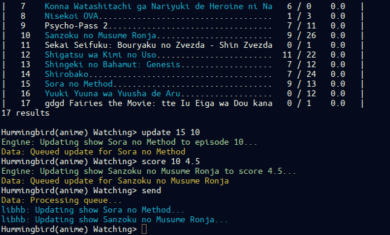

wMAL
Open multi-site list manager for *nix.
This project is maintained by z411
wMAL
wMAL aims to be a lightweight and simple but feature-rich program for GNU/Linux and Unix based systems for fetching, updating and using data from personal lists hosted in different media tracking websites like MyAnimeList, Melative or VNDB.
Features
- Manage local list and synchronize when necessary, useful when offline
- Manage multiple accounts on different sites like MyAnimeList, Melative or VNDB.
- Support for several mediatypes depending on the site (like VNs, anime, manga, LNs)
- Multiple user interfaces (GTK, curses, command-line)
- Detection of running media player, updates list if necessary
- Ability to launch media player for a requested media in the list and update list if necessary
- Highly scalable, easy to code new interfaces and support for other sites
Screenshots
Qt Interface
GTK Interface
Curses Interface
CLI
Requirements
- Python 2.6/2.7
- lsof - for the media player detection tracker.
- (Optional) Urwid (python-urwid) - for the curses/urwid interface.
- (Optional) PyGTK (python-gtk2) - for the GTK interface.
- (Optional/Recommended) PIL (python-imaging) - for showing preview images in the GTK interface.
Download
The installable source code is available at the top left of this page.wMAL is also available at the AUR as wmal-git (thanks to Toost_Inc).
Installation
Like any Python program, run the setup.py installation script:
# python setup.py install
Then you can run the program with the interface you like.
$ wmal $ wmal-curses (requires urwid) $ wmal-gtk (requires pygtk)
Alternatively, you can just run the scripts directly from the bin/ folder.
Development
The code is hosted as a git repository in github:
http://github.com/z411/wmal-python
If you encounter any problems or have anything to suggest, please don't hesitate to submit an issue in the github issue tracker:
http://github.com/z411/wmal-python/issues
License
wMAL is licensed under the GPLv3 license, please see LICENSE for details.
Authors
wMAL was written by z411 electrik.persona@gmail.com GTK icon designed by shuuichi